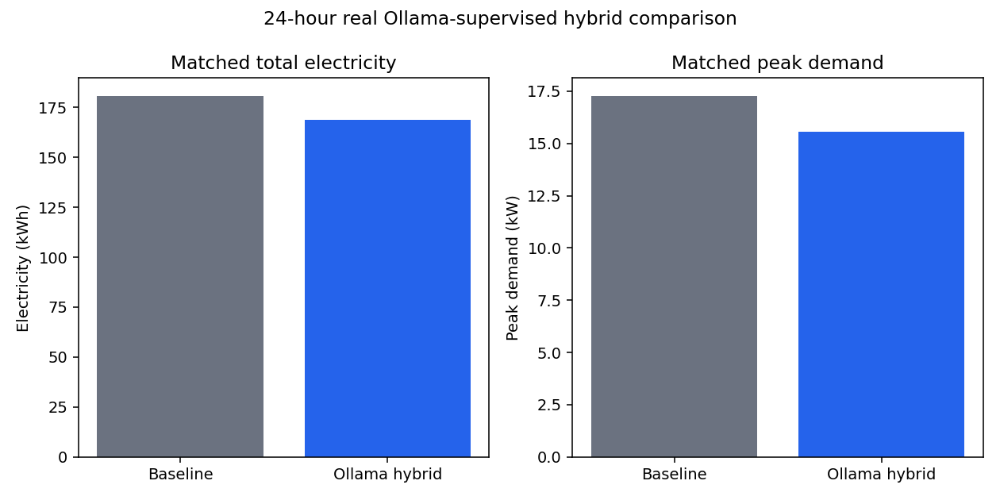
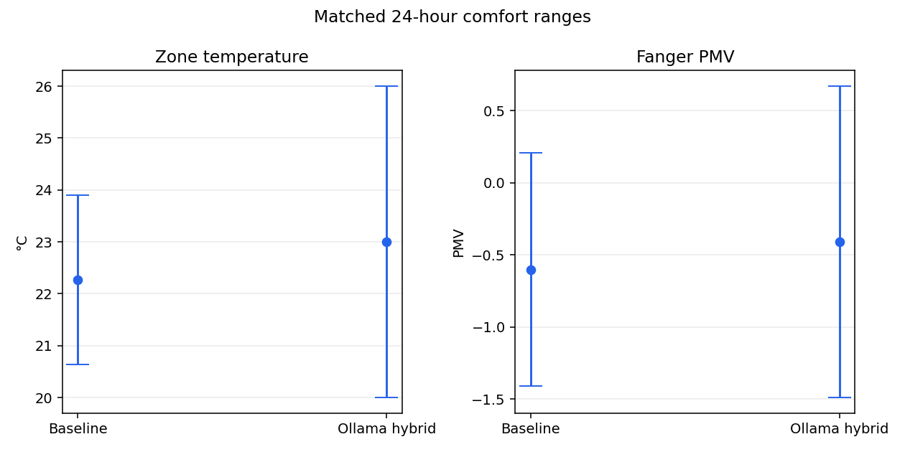
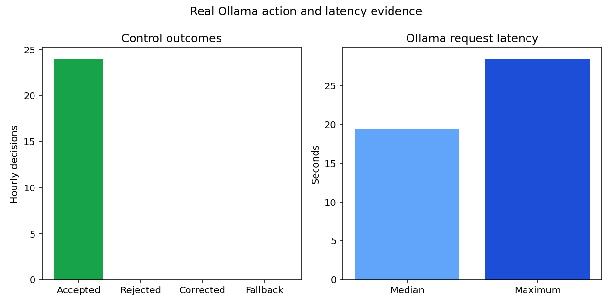

Baseline electricity
180.556 kWh24-hour real Ollama-supervised hybrid comparison
Electricity and peak demand fell
Ollama hybrid electricity
168.703 kWhElectricity reduction
11.853 kWh / 6.565%Baseline peak
17.258 kWControlled peak
15.566 kW
Comfort outcome
Lower energy came with a small PMV trade-off
| Metric | Baseline | Ollama hybrid |
|---|---|---|
| Occupied PMV compliance | 96.82% | 95.45% |
| Occupied comfort violations | 7 | 10 |
| Zone-temperature range | 20.63-23.90 C | 20.00-26.00 C |
| PMV range | -1.41 to 0.21 | -1.49 to 0.67 |

Agent and safety evidence
24 hourly decisions reached the validated control path
Accepted
24 actionsRejected
0 actionsCorrected
0 proposalsFallback
0 actionsMedian LLM latency
19.457 secondsMaximum LLM latency
28.487 secondsThe controlled run recorded 460 successful zone-actuator writes and zero EnergyPlus severe or fatal errors.

Separate evidence class
Seven-day deterministic controller
The Phase 1 fixed occupied-hours controller reduced electricity from 1,024.291 kWh to 955.179 kWh, a 69.112 kWh / 6.747% reduction over 672 timesteps.
This result was produced by a deterministic controller. It is not an Ollama-generated or real-LLM savings result.
Open the separated evidence summary